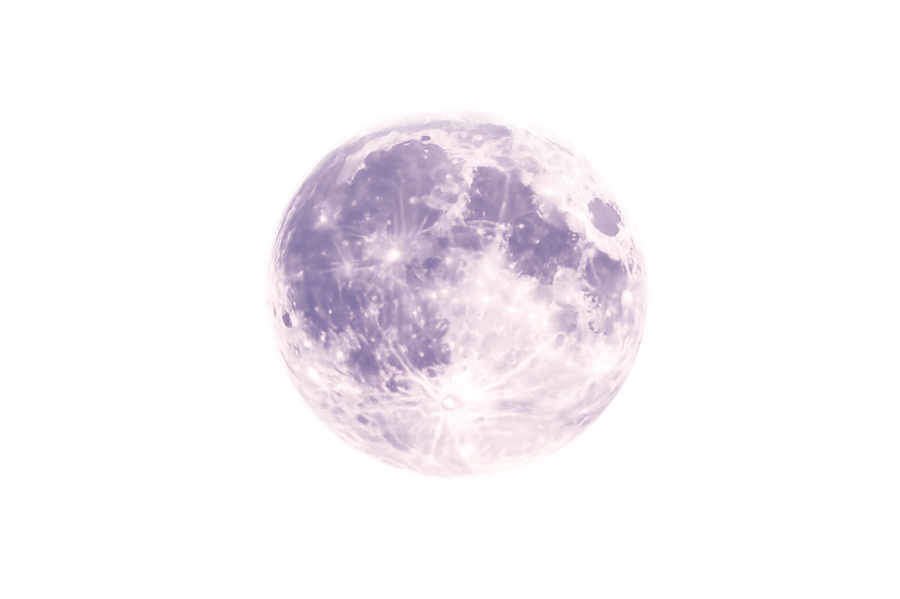
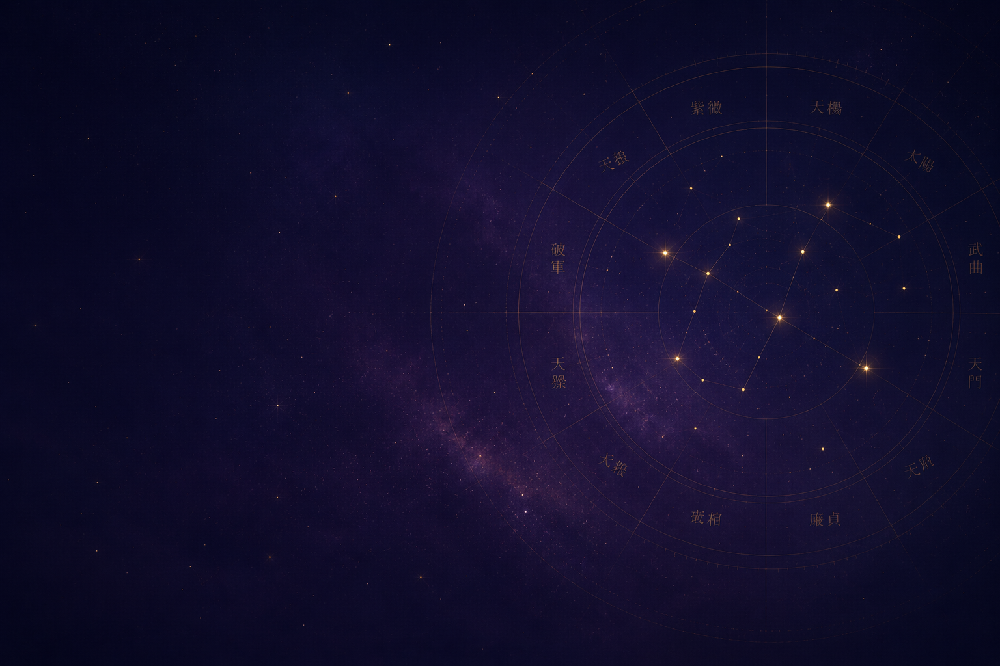
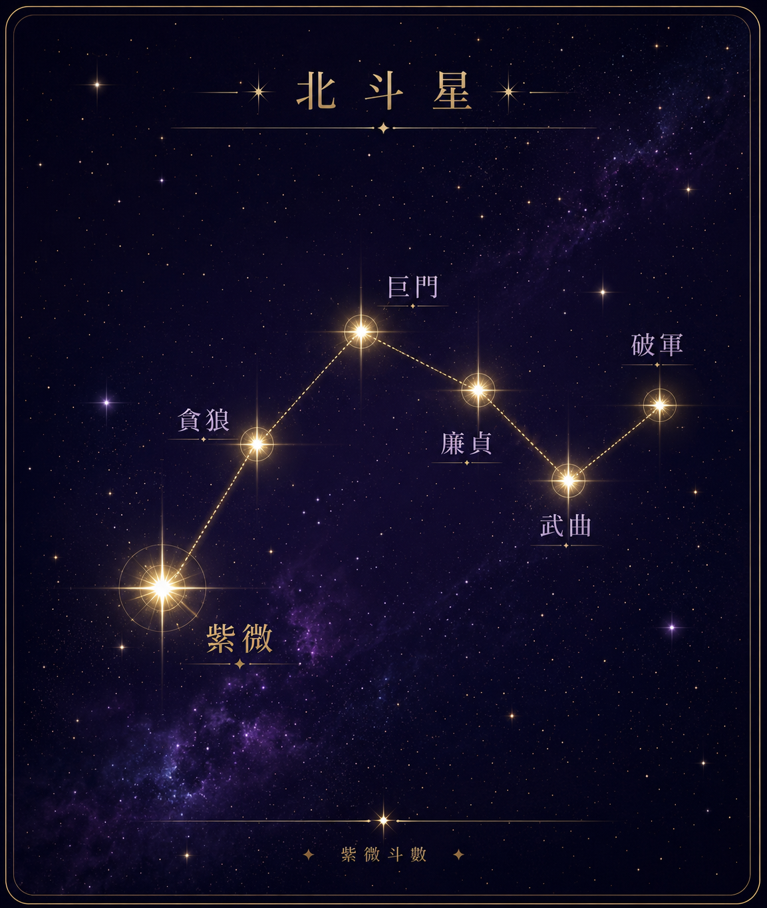

紫微斗数 ｜ 占い師
あなたの命盤には、生まれた瞬間の星の配置が刻まれています。
紫微斗数という東洋最古の占術で、
あなただけの人生の地図を読み解きます。

About
紫微斗数（しびとすう）は、中国・唐代に生まれた命理学の最高峰とも称される占術です。
生年月日と時刻をもとに12の「宮」で構成された命盤を作成し、144の星が織り成すパターンから、その人の才能・宿命・運気の流れを読み解きます。

命盤
あなたの生年月日・時刻から12宮の命盤を作成します。
Voice
Contact
鑑定はオンライン（Zoom）または対面にて承っております。
初回鑑定90分、スポット鑑定60分です。
初回の方は生年月日・出生時刻・出生地をご用意の上、
下記よりご予約ください。